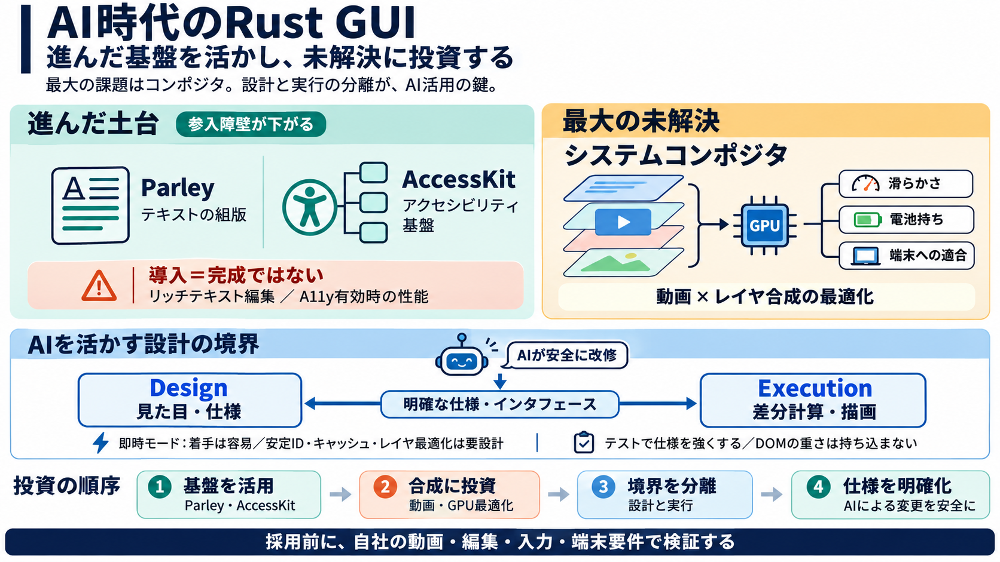

Discord Rewrites Desktop and Mobile Clients in Rust Using Zed's GPU-Accelerated Rendering Framework - InfoQ
GPUI replaces the browser engine with a hybrid immediate and retained mode, GPU-accelerated UI framework that targets 12…

Raph Levienの記事は、Rust GUIが加速する理由と、まだ解けていない“詰まりどころ”を、性能・安全性・アクセシビリティ・合成・設計分離の観点で整理します。
Rust GUIは魅力が大きい一方、テキスト描画、アクセシビリティ、コンポジタ（合成）、UIアーキテクチャ（即時モード/保持モード）など難所が多い領域です。
記事のコアは「基盤は前進」した領域と、「体感を決める未解決」領域を分けて投資順序を決めることです。
即時モードは最初の成果を出しやすい一方、製品レベルではアクセシビリティの安定IDや、中間成果物のキャッシュ、レイヤ最適化との相性が課題になりやすいです。
テキストレイアウトは Parley がエコシステム解として広がり、アクセシビリティは AccessKit が普及し“実用域”に近づいてきた、と述べられます。
記事は「基盤導入＝完了」ではないとし、リッチテキスト編集の完全アクセシブル化や、アクセシビリティ有効時の性能劣化といった“品質”の課題を残します。
GPU前提の合成（システムコンポジタ）最適化は最大級のボトルネックで、特に動画が絡む用途でレイヤ合成の設計が滑らかさ・バッテリー・端末適合性を左右します。
LLM支援で改修しやすくするには、UIツールキット内部を“明確にスコープされたモジュール”として切り出し、設計（design）と実行（execution）を分離し、仕様化されたインタフェースでAIに渡すべきです。
Web標準をそのまま追うのでなく、WPTのようにテスト駆動で“仕様の強さ”を参考にしつつ、軽量な表現や仮想化リストのデータモデルまで再設計が必要だ、という論旨です。
結論は一枚岩ではなく、目的とターゲットに応じてネイティブ/クロスプラットフォームの最適化を選びつつ、次のように“今やるべきこと”を組み立てることです。
外部報道では、DiscordがRust書き直しでGPUIを用い、GPU加速レンダリングを行う例が挙げられます。GPUIは即時/保持のハイブリッドでGPU高フレームレートを狙う、とされ、記事の“即時の課題は設計で緩和”という方向性と整合します。
この記事は「優先順位」を与える戦略記事として有用ですが、即時/保持やA11y有効化の定量差などは本文だけでは検証しづらいので、自社要件（動画/編集/入力/端末レンジ）で仮説検証が重要です。
GPUI replaces the browser engine with a hybrid immediate and retained mode, GPU-accelerated UI framework that targets 12…
Now is a good time to review an architectural experiement that ultimately we decided not to pursue. The crochet prototyp…
To be clear I said that egui has enough state. It's just that it barely has enough. I've seen immediate mode libraries t…
Raph Levien is a really smart and productive person, and Google funded 4 other Xilem devs in early 2024. But still the d…
MVVM-oriented (properties, observable collections, bindings), ui! macro, multiplatform, renderer-agnostic, with styles. …